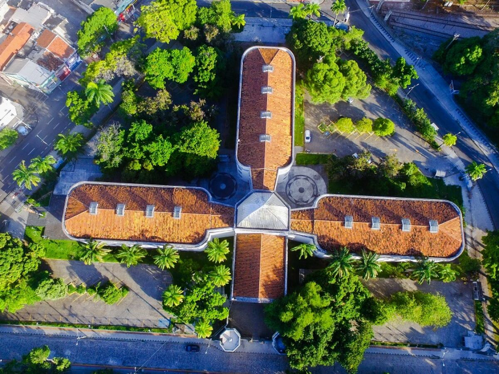

Casa da Cultura de Recife
A Casa da Cultura de Recife, antes uma prisão, é hoje um vibrante centro de expressão artística. Repleta de história, oferece um mergulho na cultura pernambucana, com artesanato, música e dança. É um encontro entre passado e presente, onde as raízes culturais se entrelaçam, convidando a explorar o patrimônio e a criatividade da cidade.
